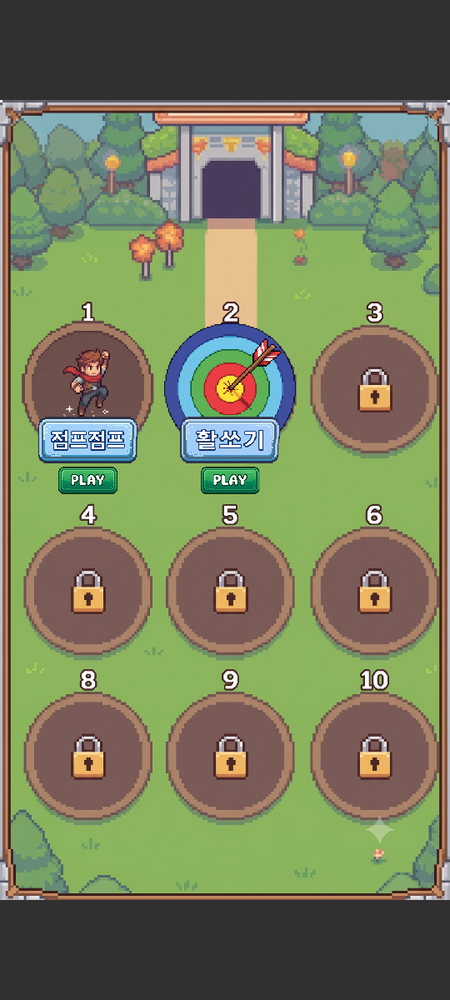

<title>타이틀 · 로비 적용 보고서</title>
<meta charset="utf-8">
<style>
  :root{
    --bg:#f7f6f3; --card:#fff; --ink:#1c1b19; --muted:#6b6862;
    --line:#e3e0da; --accent:#c2410c; --ok:#15803d; --warn:#b45309;
  }
  @media (prefers-color-scheme:dark){:root:not([data-theme="light"]){
    --bg:#16151a; --card:#1f1e24; --ink:#eceaf0; --muted:#a3a0ab;
    --line:#33313b; --accent:#fb923c; --ok:#4ade80; --warn:#fbbf24;
  }}
  :root[data-theme="dark"]{
    --bg:#16151a; --card:#1f1e24; --ink:#eceaf0; --muted:#a3a0ab;
    --line:#33313b; --accent:#fb923c; --ok:#4ade80; --warn:#fbbf24;
  }
  body{background:var(--bg);color:var(--ink);font:16px/1.65 "Malgun Gothic","Segoe UI",system-ui,sans-serif;
       margin:0;padding:40px 20px 80px}
  main{max-width:820px;margin:0 auto}
  h1{font-size:28px;line-height:1.3;margin:0 0 6px;letter-spacing:-.02em}
  .sub{color:var(--muted);margin:0 0 36px;font-size:14px}
  h2{font-size:19px;margin:44px 0 14px;padding-bottom:8px;border-bottom:2px solid var(--line)}
  h3{font-size:15px;margin:26px 0 8px;color:var(--accent)}
  section{background:var(--card);border:1px solid var(--line);border-radius:12px;padding:4px 24px 24px;margin-bottom:8px}
  .tw{overflow-x:auto;margin:14px 0}
  table{border-collapse:collapse;width:100%;font-size:14px;min-width:460px}
  th,td{padding:7px 10px;text-align:left;border-bottom:1px solid var(--line);vertical-align:top}
  th{font-weight:600;color:var(--muted);font-size:12.5px;text-transform:uppercase;letter-spacing:.04em}
  td.n{text-align:right;font-variant-numeric:tabular-nums}
  tr:last-child td{border-bottom:none}
  code{background:var(--bg);border:1px solid var(--line);border-radius:4px;padding:1px 5px;font-size:13px;
       font-family:Consolas,"Cascadia Mono",monospace}
  ul{padding-left:20px} li{margin:6px 0}
  ol{padding-left:22px} ol li{margin:8px 0}
  .tag{display:inline-block;font-size:12px;padding:2px 9px;border-radius:99px;border:1px solid currentColor;
       font-weight:600;vertical-align:middle}
  .ok{color:var(--ok)} .warn{color:var(--warn)}
  .note{border-left:3px solid var(--warn);background:var(--bg);padding:12px 16px;border-radius:0 8px 8px 0;margin:16px 0}
  .note p{margin:6px 0}
  .flow{background:var(--bg);border:1px solid var(--line);border-radius:8px;padding:14px 16px;margin:16px 0;
        font-family:Consolas,"Cascadia Mono",monospace;font-size:13px;line-height:1.7;overflow-x:auto;white-space:pre}
  .shots{display:flex;gap:14px;flex-wrap:wrap;margin:18px 0}
  .shot{flex:1 1 180px;min-width:150px;max-width:230px}
  .shot img{width:100%;display:block;border:1px solid var(--line);border-radius:8px;background:var(--bg)}
  .shot figcaption{font-size:12.5px;color:var(--muted);margin-top:6px;text-align:center}
  figure{margin:0}
</style>

<main>
<h1>타이틀 · 로비 적용 보고서</h1>
<p class="sub">심심할 때 하는 게임 · 2026-09-06 · 원본 <code>게임 실행 및 입장 기획서_01.pptx / .pdf</code></p>

<section>
<h2>1. 한 줄 요약</h2>
<p><strong>점프점프 하나짜리 앱이 "미니게임 모음 앱"이 되었습니다.</strong>
앱을 켜면 타이틀이 뜨고, START 를 누르면 로비(게임 선택)가 뜨고,
로비에서 점프점프 칸을 누르면 게임이 시작됩니다. 게임 오버 화면에서
<code>&lt; LOBBY</code> 를 누르면 로비로 돌아옵니다.</p>

<div class="flow">타이틀(TitleScene) ──START──▶ 로비(LobbyScene) ──PLAY──▶ 점프점프(GameScene)
                                  ▲                          │
                                  └───────── &lt; LOBBY ────────┘</div>

<p>기획서에 그려 주신 화면 3장을 그대로 옮겼고, 목업의 글자·버튼 위치를
<strong>픽셀 단위로 재서</strong> 같은 자리에 놓았습니다.</p>
</section>

<section>
<h2>2. 실제로 나온 화면</h2>
<p>플레이 모드에 들어가지 않고 배치 모드로 찍은 <strong>진짜 렌더 결과</strong>입니다.
(<code>JumpJump\JumpJump_Preview\</code> 폴더)</p>

<h3>9:16 — 기획서 목업과 같은 비율</h3>
<div class="shots">
  <figure class="shot">
    
    <figcaption>00_title.png</figcaption>
  </figure>
  <figure class="shot">
    
    <figcaption>00_lobby.png</figcaption>
  </figure>
</div>

<h3>20:9 — 요즘 폰의 실제 비율</h3>
<div class="shots">
  <figure class="shot">
    
    <figcaption>00_title_tall.png</figcaption>
  </figure>
  <figure class="shot">
    
    <figcaption>00_lobby_tall.png · 위아래 어두운 띠</figcaption>
  </figure>
</div>

<div class="note">
<p><strong>왜 두 벌을 찍나요?</strong> 폰마다 세로 길이가 달라서, 한쪽 비율에서만 확인하면
실제 기기에서 그림이 잘리거나 여백이 생기는 걸 놓칩니다. 앞으로 화면을 손볼 때마다
두 장을 같이 보시면 됩니다.</p>
</div>
</section>

<section>
<h2>3. 화면별로 무엇을 했나</h2>

<h3>타이틀 화면</h3>
<ul>
  <li><code>@Title.jpg</code> 를 배경으로 깔고, 그 위에 게임 이름
      <strong>"심심할 때 하는 게임"</strong> 과 START 버튼을 얹었습니다.</li>
  <li>글자와 버튼 위치는 목업에서 잰 값 그대로입니다
      (이름 = 위에서 19%, START = 위에서 75%).</li>
  <li>배경은 <strong>화면을 꽉 채우는</strong> 방식입니다. 풍경이라 가장자리가 조금 잘려도
      괜찮고, 대신 여백이 안 생깁니다.</li>
  <li>START 버튼은 아주 살짝 숨을 쉽니다(크기가 커졌다 작아졌다). 눌러야 할 곳이라는 신호입니다.</li>
</ul>

<h3>로비 화면 (게임 선택)</h3>
<ul>
  <li><code>@Lobby.png</code> 에는 동그란 자리 9개와 자물쇠가 <strong>이미 그려져</strong> 있습니다.
      그래서 코드는 <strong>게임이 들어 있는 칸에만</strong> 아이콘 · 이름표 · PLAY 를 덮어씌웁니다.
      나머지 칸은 아무것도 하지 않으므로 그림의 자물쇠가 그대로 보입니다.</li>
  <li>1번 칸에 점프점프가 들어갔습니다. <code>@Game_01_Jump.png</code> 아이콘이
      배경의 동그라미를 정확히 덮고, 아래에 <code>@Pannel_Name.png</code> 이름표(<strong>점프점프!</strong>)와
      <code>@Play_Button.png</code> 이 붙습니다.</li>
  <li>아이콘 · 이름표 · PLAY <strong>어디를 눌러도</strong> 게임이 시작됩니다.</li>
  <li>배경은 <strong>전체가 보이게</strong> 넣습니다. 칸이 하나라도 잘리면 안 되기 때문입니다.
      그 결과 긴 폰에서는 위아래에 어두운 띠가 생깁니다(아래 5번 참고).</li>
</ul>

<h3>점프점프(게임) 쪽 변경</h3>
<ul>
  <li>시작 대기 화면과 게임 오버 화면 아래에 <strong><code>&lt; LOBBY</code> 버튼</strong>을 넣었습니다.</li>
  <li>그 버튼을 누른 것이 <em>점프</em>로도 세지 않도록, UI 위를 누른 터치는 걸러 냅니다.
      (전에는 화면 아무 데나 누르면 점프였습니다)</li>
  <li><strong>게임 규칙 · 난이도 · 물리는 하나도 건드리지 않았습니다.</strong>
      자동 플레이테스트 결과(봇이 138~148칸까지 오름)가 이전 범위 그대로입니다.
      발판 폭이 칸마다 무작위라 돌릴 때마다 조금씩 달라집니다.</li>
</ul>
</section>

<section>
<h2>4. 미니게임을 새로 붙이는 방법 <span class="tag ok">코드 수정 없음</span></h2>
<p>"앞으로 여기에 미니게임을 추가하는 형태로 개발한다"고 하셔서,
<strong>게임을 늘릴 때 코드를 안 고쳐도 되게</strong> 만들었습니다. 4단계입니다.</p>

<ol>
  <li><strong>게임 씬을 만든다.</strong> 예: <code>Assets/Games/Flappy/Scenes/FlappyScene.unity</code></li>
  <li><strong>아이콘을 작업 폴더에 넣는다.</strong> <code>D:\00.JumpJump\@Game_02_이름.png</code><br>
      <span style="color:var(--muted);font-size:14px">
      <code>@Game_01_Jump.png</code> 처럼 동그란 그림이면 로비 자리에 딱 맞습니다.
      주변 투명 여백은 알아서 잘라 냅니다.</span></li>
  <li><strong>Tools &gt; Arcade &gt; Build All Scenes</strong> 를 누른다. (아이콘이 프로젝트로 들어옵니다)</li>
  <li><strong><code>Assets/Shell/GameCatalog.asset</code></strong> 를 열고 목록에 한 줄 추가한다.</li>
</ol>

<div class="tw">
<table>
<tr><th>칸</th><th>뜻</th><th>점프점프의 값</th></tr>
<tr><td><code>Id</code></td><td>코드용 이름</td><td><code>jumpjump</code></td></tr>
<tr><td><code>Display Name</code></td><td>이름표에 찍히는 글자</td><td>점프점프!</td></tr>
<tr><td><code>Scene Name</code></td><td>씬 파일 이름 (확장자 없이)</td><td><code>GameScene</code></td></tr>
<tr><td><code>Icon</code></td><td>동그란 아이콘 그림</td><td><code>Art/Games/Game_01_Jump.png</code></td></tr>
<tr><td><code>Slot</code></td><td>로비의 몇 번째 칸 (0 = 왼쪽 위)</td><td class="n">0</td></tr>
<tr><td><code>Available</code></td><td>끄면 자물쇠 상태로 남음</td><td>켜짐</td></tr>
</table>
</div>

<div class="note">
<p><strong>딱 하나 코드를 만져야 하는 곳</strong>이 있습니다.
새 씬을 폰에서도 열려면 <code>ShellSceneBuilder.RegisterBuildSettings()</code> 의
씬 목록에 경로를 한 줄 추가해야 합니다. 그건 제가 해 드리면 됩니다.</p>
</div>

<h3>로비 칸 번호 주의</h3>
<p>배경 그림에 적힌 번호와 코드의 <code>Slot</code> 번호가 다릅니다.</p>
<div class="tw">
<table>
<tr><th>그림에 적힌 번호</th><td class="n">1</td><td class="n">2</td><td class="n">3</td><td class="n">4</td><td class="n">5</td><td class="n">6</td><td class="n">8</td><td class="n">9</td><td class="n">10</td></tr>
<tr><th>코드의 <code>Slot</code></th><td class="n">0</td><td class="n">1</td><td class="n">2</td><td class="n">3</td><td class="n">4</td><td class="n">5</td><td class="n">6</td><td class="n">7</td><td class="n">8</td></tr>
</table>
</div>
<p>그림의 7번째 칸에 <strong>7 대신 8</strong> 이 적혀 있고 마지막이 10 으로 끝납니다.
그림 쪽 오타로 보입니다.</p>
</section>

<section>
<h2>5. 결정해 주셔야 할 것 <span class="tag warn">확인 필요</span></h2>

<h3>① 한글 폰트를 프로젝트에 넣지 않았습니다</h3>
<p>지금은 Unity 기본 폰트가 운영체제 폰트로 대신 그려 주고 있습니다.
위 캡처(윈도우)에서는 한글이 잘 나오지만, <strong>안드로이드 실기기에서도 나오는지는
APK 를 넣어 봐야 압니다.</strong> 네모(□□□)로 나오면 무료 폰트(나눔고딕 등)를
프로젝트에 넣어야 합니다. — 다음 APK 테스트 때 같이 확인해 주세요.</p>

<h3>② 로비 그림이 9:16 이라 긴 폰에서 위아래에 띠가 생깁니다</h3>
<p><code>@Lobby.png</code> 가 1536×2730(≈9:16)인데 요즘 폰은 20:9 로 더 깁니다.
칸이 잘리면 안 되니 <strong>일부러 전체가 보이게</strong> 넣었고, 남는 곳은 그림의 테두리 색을
어둡게 깔아 액자처럼 보이게 했습니다. 선택지:</p>
<ul>
  <li><strong>(a) 그대로 둔다</strong> — 액자 느낌이라 어색하진 않습니다. <span class="tag ok">현재</span></li>
  <li><strong>(b) 세로로 더 긴 로비 그림을 새로 그린다</strong> — 가장 깔끔.
      그러면 칸 위치를 다시 재야 하는데 그건 제가 합니다.</li>
</ul>

<h3>③ 설정(톱니바퀴) 버튼은 아직 눌리지 않습니다</h3>
<p>그림에는 있지만 기능이 없습니다. 무엇을 넣을지 정해 주시면 붙이겠습니다.
(소리 끄기 / 진동 / 기록 초기화 같은 것들)</p>

<h3>④ 폰 홈 화면의 앱 이름을 바꿨습니다</h3>
<p><code>JumpJump</code> → <strong>심심할 때 하는 게임</strong>.
패키지 이름(<code>com.zkfpf.jumpjump</code>)은 그대로 두었습니다 —
이걸 바꾸면 폰에 이미 깔린 앱과 <em>별개의 앱</em>으로 설치되기 때문입니다.
바꾸길 원하시면 말씀해 주세요.</p>
</section>

<section>
<h2>6. 어떻게 만들었나 (기술 메모)</h2>

<h3>화면 위치를 픽셀이 아니라 "비율"로 잡았습니다</h3>
<p>버튼을 "화면 왼쪽에서 340px" 같은 식으로 박아 두면 폰 해상도가 달라질 때마다 어긋납니다.
그래서 <strong>배경 그림 안에서 몇 % 지점</strong>인지로만 붙였습니다.
배경만 제대로 맞추면 아이콘·이름표·PLAY 가 알아서 따라옵니다. 어긋날 수가 없습니다.</p>

<h3>그림의 투명 여백을 가져오면서 잘라 냅니다</h3>
<p>주신 버튼 PNG 는 그림 주위 빈 공간이 넓습니다. 그대로 쓰면 "화면 폭의 46%로" 라고 지정해도
눈에 보이는 버튼은 29% 밖에 안 됩니다. 그래서 프로젝트로 가져오면서 여백을 잘라
<strong>사각형 크기 = 보이는 그림 크기</strong>가 되게 했습니다.
<strong>원본 파일은 작업 폴더에 그대로 있습니다.</strong></p>

<div class="tw">
<table>
<tr><th>작업 폴더 원본</th><th>크기</th><th>프로젝트 안</th><th>잘린 뒤</th></tr>
<tr><td><code>@Start_Button.png</code></td><td class="n">2400×1519</td><td><code>Art/Start_Button.png</code></td><td class="n">1529×483</td></tr>
<tr><td><code>@Play_Button.png</code></td><td class="n">2400×1309</td><td><code>Art/Play_Button.png</code></td><td class="n">1724×803</td></tr>
<tr><td><code>@Pannel_Name.png</code></td><td class="n">2400×1309</td><td><code>Art/Panel_Name.png</code></td><td class="n">2164×1063</td></tr>
<tr><td><code>@Game_01_Jump.png</code></td><td class="n">635×569</td><td><code>Art/Games/Game_01_Jump.png</code></td><td class="n">492×510</td></tr>
<tr><td><code>@Title.jpg</code> / <code>@Lobby.png</code></td><td class="n">—</td><td>그대로 복사</td><td>배경은 자를 여백 없음</td></tr>
</table>
</div>

<h3>로비 칸 위치는 그림을 직접 재서 넣었습니다</h3>
<p><code>Lobby.png</code> 에서 동그란 자리 9개의 위치를 프로그램으로 측정했습니다.
가로 중심은 그림 폭의 19.5% / 51.1% / 83.3%, 세로 중심은 36.1% / 61.3% / 82.0%,
동그라미 지름은 438px 이었습니다. 이 값이 <code>LobbyScreen</code> 인스펙터에 들어 있어
언제든 눈으로 보며 조정할 수 있습니다.</p>

<h3>새로 생긴 폴더</h3>
<div class="tw">
<table>
<tr><th>폴더</th><th>내용</th></tr>
<tr><td><code>Assets/Shell/</code></td><td>껍데기 — 타이틀 / 로비 / 게임 목록. 앞으로 게임이 늘어도 여긴 거의 안 바뀝니다</td></tr>
<tr><td><code>Assets/JumpJump/</code></td><td>미니게임 1번 "점프점프!" (기존 그대로)</td></tr>
</table>
</div>
<p>자세한 설명은 <code>JumpJump\Assets\Shell\README.md</code> 에 정리해 두었습니다.</p>
</section>

<section>
<h2>7. 검증 결과 <span class="tag ok">전부 통과</span></h2>
<p>에디터를 열지 않고 배치 모드로 실제 실행해서 확인했습니다.</p>
<div class="tw">
<table>
<tr><th>확인한 것</th><th>결과</th></tr>
<tr><td>컴파일 + 씬 3장 생성 (<code>ShellSceneBuilder.BuildAll</code>)</td><td class="ok">성공 · 오류 0건</td></tr>
<tr><td>Build Settings 순서 (0 타이틀 / 1 로비 / 2 게임)</td><td class="ok">정상</td></tr>
<tr><td>START 버튼 → 로비 연결이 씬에 저장됨</td><td class="ok">확인</td></tr>
<tr><td>&lt; LOBBY 버튼 → 로비 연결이 씬에 저장됨</td><td class="ok">확인</td></tr>
<tr><td>타이틀 · 로비 화면 캡처 (9:16 / 20:9)</td><td class="ok">4장 생성 · 배치 정확</td></tr>
<tr><td>점프점프 화면 캡처 (시작 / 플레이 / 고지대)</td><td class="ok">3장 생성 · 이전과 동일</td></tr>
<tr><td>자동 플레이테스트 120초</td><td class="ok">봇 148칸 · 42,500점 — 규칙 변화 없음</td></tr>
</table>
</div>
<p style="color:var(--muted);font-size:14px">APK 빌드는 10분 이상 걸려서 이번엔 돌리지 않았습니다.
기기에서 확인하실 준비가 되면 <strong>Tools &gt; JumpJump &gt; Build Android APK</strong> 로 구우면
타이틀 · 로비 · 게임이 모두 들어간 APK 가 나옵니다.</p>
</section>

<section>
<h2>8. 테스트할 때 봐 주실 것 <span class="tag warn">체크리스트</span></h2>
<p>Unity 에디터에서 <strong>Tools &gt; Arcade &gt; Build All Scenes</strong> 를 누른 뒤
<strong>Play</strong> 하시면 타이틀부터 시작합니다.</p>

<div class="tw">
<table>
<tr><th>순서</th><th>확인할 것</th></tr>
<tr><td class="n">1</td><td>타이틀에서 <strong>게임 이름 글자</strong>가 잘 읽히는지. 위치·크기가 마음에 드는지</td></tr>
<tr><td class="n">2</td><td><strong>START</strong> 를 누르면 로비로 넘어가는지</td></tr>
<tr><td class="n">3</td><td>로비 1번 칸의 <strong>아이콘이 동그란 자리에 정확히 얹혀</strong> 있는지</td></tr>
<tr><td class="n">4</td><td>이름표 글자 <strong>"점프점프!"</strong> 크기가 적당한지</td></tr>
<tr><td class="n">5</td><td>아이콘 / 이름표 / <strong>PLAY</strong> 아무 데나 눌러 게임이 시작되는지</td></tr>
<tr><td class="n">6</td><td>게임 시작 대기 화면의 <strong>&lt; LOBBY</strong> 를 누르면 로비로 돌아오는지</td></tr>
<tr><td class="n">7</td><td>게임 오버 뒤 <strong>&lt; LOBBY</strong> 도 되는지. 그리고 <strong>화면을 누르면 재시작</strong>은 그대로인지</td></tr>
<tr><td class="n">8</td><td>게임 자체(점프·발판·타이머·점수)가 <strong>전과 똑같은지</strong> — 여긴 안 건드렸습니다</td></tr>
</table>
</div>

<div class="note">
<p><strong>폰에서 테스트하실 거라면 APK 를 새로 구워야 합니다.</strong>
작업 폴더의 <code>JumpJump.apk</code> 는 타이틀·로비를 붙이기 <em>전</em>에 만든 것이라
예전 화면만 들어 있습니다. <strong>Tools &gt; JumpJump &gt; Build Android APK</strong> 로
다시 구우면 3장이 모두 들어갑니다. (10분 이상 걸립니다)</p>
</div>

<p>고칠 부분은 늘 하시던 대로 <code>수정사항_02.xlsx</code> 같은 파일로 정리해 주시면 됩니다.
다음에 이어서 할 때 그 파일부터 찾아보겠습니다.</p>
</section>

</main>
